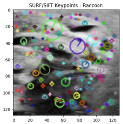
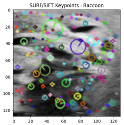

1. Introduction
Computer vision is a complex discipline that seeks to distinguish and classify images [1]. This project aims to accomplish a total of five (5) tasks related to computer vision.
-
1) Dataset creation: Generate a dataset containing two elements of choice using OpenImage V7.
-
2) Image Classification: Implement various classification algorithms and methods.
-
3) Summary of Work: report the findings on this study.
-
4) Scientific Literature: Reference literatures that guide selection, implementation and summary of techniques.
-
5) Document Quality: Adhere to set word limit, document structure, formatting, logic flow, and clarity.
The chosen pair for this project shall be a Raccoon class and a Rifle class.
2. Curation and Presentation of the Dataset
The dataset is an aggregate of images, compartmentalized into two folders named Raccoon and Rifle stored on google drive. There are a total of two thousand and sixty nine (2069) images. One thousand eight hundred and two (1802) are stored in the Rifle folder and two hundred and sixty seven (267) are stored in the Raccoon folder.
The images were of different sizes and resolutions so they were resized to 128 x 128 pixels to prevent skewness and manage memory. A grayscale filter was applied ensuring evenness during training and evaluation and improving computational efficiency.
70% of the images were then divided into training dataset and 30% went into the testing dataset.
Feature Extraction
SURF (Speeded-Up Robust Features)
SURF works by detecting abrupt changes in an image such as abrupt changes in color or shape.
 

A total of one (1) image was found lacking in any distinct qualities and marked for deletion.

Image 001722.jpg
Using DecisionTreeClassifier, the following were the results:
A total of 95 misclassified images.
HOGs (Histogram of Gradients)
HOGs works by detecting the magnitude and orientation of gradients in an image, which was effective in detecting the edges in riffles.
Using DecisionTreeClassifier, the following were the results:

Seventy five misclassified images makes HOGS a slightly better choice for feature extraction than SURF for this data set.
PCA (Principal component analysis)
PCA reduces the dimensions in our images and retains only the most striking features, hence simplifying the classification process.
To prevent data leaks, simulate a Real-World Scenario and Maintain Test Set Integrity, PCA was applied only to the training data set.
Below is a sample of an image constructed from the calculated principal component.

A combination of PCA and a Decision Tree Classifier resulted in an accuracy of 80.92%.
KNN resulted in a test accuracy of 82.61%, a slight improvement.

3. Machine Learning Techniques
3.2 Random Forests
After performing feature extraction with Histogram of Gradients (HOGs), Random forests were trained.
Hyperparameter optimization using grid search marginally improved the predictions.
3.3 Stochastic Gradient Descent Classifier
Stochastic Gradient Descent is an iterative binary classification optimization algorithm. In this case, it is used to find the optimal parameters for a linear classifier that separates the two Rifle and Raccoon classes.
3.4 Multi-layer Perceptron (MLP)
MLP was implemented with two(2) hidden layers, ReLU activation, dropout regularization, and the Adam optimizer.
Accuracy and heatmaps are used to evaluate the model's results.
Below are the MLP’s performance results while using HOG’s extracted features;
Below are the results of the MLP with SURF’s extracted features.
3.5 Deep Learning Networks
A Convolutional Neural Network was defined and trained according to the following architecture;
The CNN had three convolutional layers with 32, 64, and 128 filters.
Max-pooling was applied after each convolutional layer.
Two fully connected (dense) layers with 128 and 64 neurons were used.
ReLU activation was used in convolutional and dense layers.
The output layer used softmax activation for multi-class classification.
The Adam optimizer was used for training.
Sparse categorical cross-entropy loss was used for integer labels.
The Convolution Neural Network out performed every other model thus far with its 90.10% accuracy score.
3.6 Pre-trained Networks
Leveraging transfer learning, only the final connected layers were retrained. Though the test accuracy was lower than in Deep learning, it still performed better than some of the other machine learning algorithms like the Multilayer Perceptrons.
4. Original Idea
Feature Extraction
SURF (Speeded-Up Robust Features): SURF extracts object features such as local abrupt changes in scale, color and rotation.
HOG (Histogram of Oriented Gradients): HOG Extracts features that represent the distribution of gradients and their orientation in localized portions of an image.
Merged Features: Both SURF and HOG extracted feature vectors for each image were concatenated resulting in a richer representation of the image content.
Bagging
Bagging created an ensemble of base estimators trained on different subsets of the data with the intent to reduce variance.
CNN (Convolutional Neural Network):
Reshaping was a necessary step before feeding the merged feature vectors into the CNN as inputs. A 4D array was created with the variables: number of samples, height, width and channels.
Building the CNN Model: The CNN architecture was defined using the TensorFlow library.
Training CNN: The model used the bagged features and their labels as inputs.
Evaluation:
5. Discussion and Comparison of Methods
The performance accuracy of various method combinations varied greatly.
i) Principal Component Analysis, k-NN, Random Forests and SGD:
Pros: They have extensive online documentation making them relatively easy to implement. Not much computation resources needed to be dedicated to them.
Cons: They struggled with complex patterns. As soon as HOGs and SURF were concatenated, the accuracy plummeted.
Overall: They were great models, just not the right fit for this particular dataset combination.
ii) Feature Extraction Techniques: SURF and HOG
Pros: They served their purpose by reducing the dimensionalities of the images and extracting relevant features.
Cons: Some images were too complex for them to capture essential features.
Overall: Programming every feature extraction first hand was exhausting and time consuming yet far from being all encompassing.
iii) Deep Learning: CNN and MLP
Pros: They granted 90% accuracy when tested. Automatically learning features instead of having to program them line by line was incredibly convenient. They had no trouble capturing complex features within the provided dataset.
Cons: Too much computation power was needed and overfitting suddenly became a problem.
Overall: They had the highest measure of accuracy compared to other tried models.
iv) Pre-trained Models: Fine-tuned ResNet
Pros: The body of knowledge they draw from is vast, making transfer learning its strongest feature. Great performance is often expected even on smaller datasets. The computation resources required are reduced compared to training a deep model from the ground-up.
Cons: Some adaptation was required for the chosen dataset.
Overall: Even though, often, they outperform other methods, for this dataset, CNN happened to have the highest accuracy.
6. Conclusions
This study explored various machine learning methods, feature extraction and image classification. While deep learning models and pre-trained networks offer the best accuracy performance, classical methods offer less resource intensive alternatives.
Future work would explore narrowing bagging to only the raccoon class and exploring other ensemblement techniques.
7. References
[1] Huang, S.-C. and Le, T.-H. (2021). Object detection. [online] Academic Press, pp.283–331. doi:https://doi.org/10.1016/B978-0-323-90198-7.00009-4.